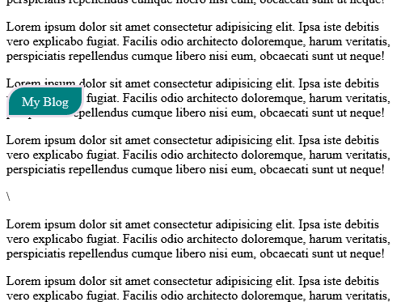

How to create a floating button/widget
A simple guide on how to create a floating button with gradient background
13 July,2021

A floating button or widget is one of my favorite floating components and i am going to show you just how easy it is to create one for your project.
The HTML
Write some basic html code to the declare your floating button. It could be the button tag itself but iwill be using a <div> tag in this tutorial
Your html should look like so:

The CSS

Result
After correctly writing the code above and populatng the page with information so as to see the float button working . You should have this result if not check your code again to make sure there are no typos in your code.
On scrolling your float button should be floating like a bird.
Thanks for Reading!